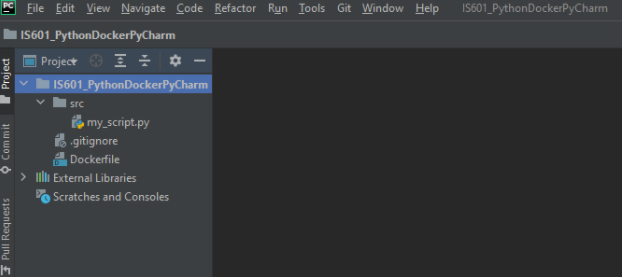
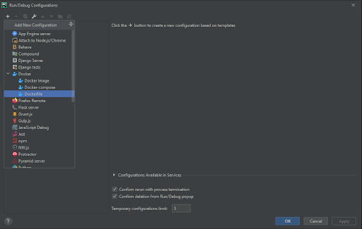
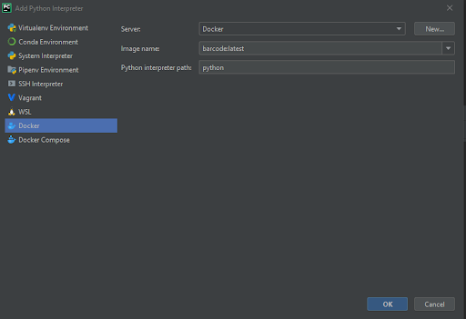

Requirements
Before following these instructions please ensure you have already installed the following software:
After everything is installed, you need to ensure that the Docker application is running properly on your computer.
Create a repository
Once you have completed all the requirements, you may create a new repository with a folder\file structure like the one below:

Contents of each of the files in the repository
src/my_script.py
# Sample taken from pyStrich GitHub repository
# https://github.com/mmulqueen/pyStrich
from pystrich.datamatrix import DataMatrixEncoder
encoder = DataMatrixEncoder('This is a DataMatrix.')
encoder.save('./datamatrix_test.png')
print(encoder.get_ascii())
Dockerfile
FROM python:3
ADD src /src
RUN pip install pystrich
CMD [ "python", "./src/my_script.py" ]
Connect PyCharm to Docker environment
- Navigate to File -> Settings (on Windows) or Preferences (on macOS)
- Under the Settings menu, expand Build, Execution, Deployment, select Docker and click on the ‘+’ icon to add a Docker environment.
- Select the correct Docker daemon and ensure Pycharm can establish a connection to it.
Note: This will vary depending on the environment you are running.
- Docker Toolbox running on a Windows Non-Pro (Windows Home) operating system.
Note: This will require a change in the Docker settings to ensure you expose the daemon on a specific TCP port without TLS.
- Docker Native running on a Windows Pro operating system
- Docker running on macOS
- Add Docker to the run configuration by clicking the Add Configuration button on the top right corner of PyCharm.
- Once the Run/Debug Configuration window opens, click the ‘+’ icon and select Docker -> Dockerfile

- Enter all the require information for the run configuration:
Name - enter a name for the run configuration
Dockerfile - select the dockerfile you would want to execute within this run configuration
Image tag - enter the tag name that will be used on image you will built
Run built image - ensure this checkbox is checked
- Click on the Run\Play button in order to execute the run configuration you just set up.
- Confirm the output of the run configuration, in this case the output will be the barcode created on the python script.
- Add the corresponding interpreter for your environment, by clicking on the current interpreter and then Add interpreter
- Select Docker and the corresponding image name

- Select the recently created interpreter
- Confirm the interpreter is working properly by navigating to the interpreter settings from the same menu above. This should ensure that all the libraries required are loaded.